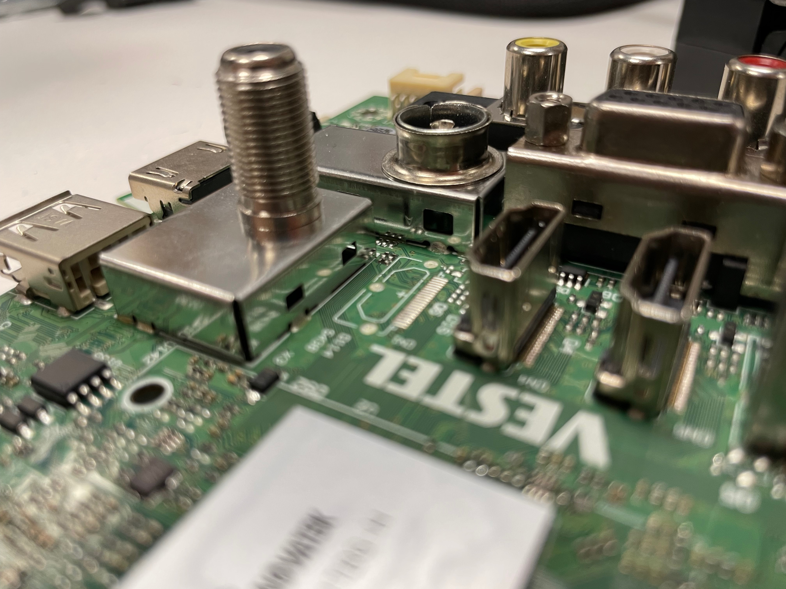
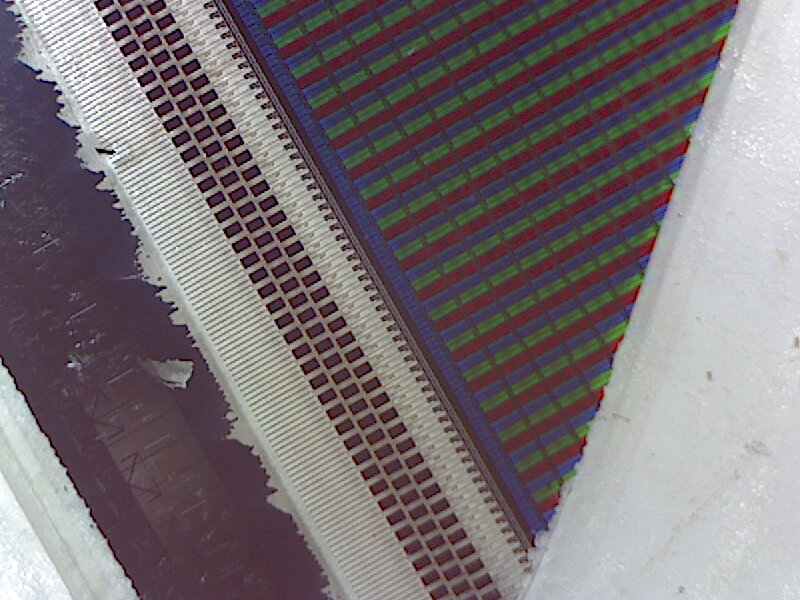
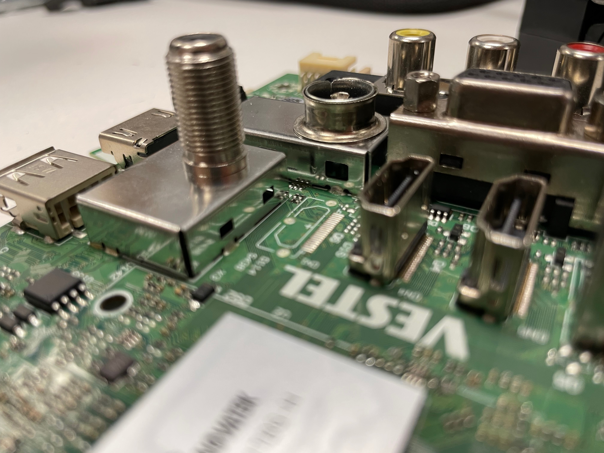
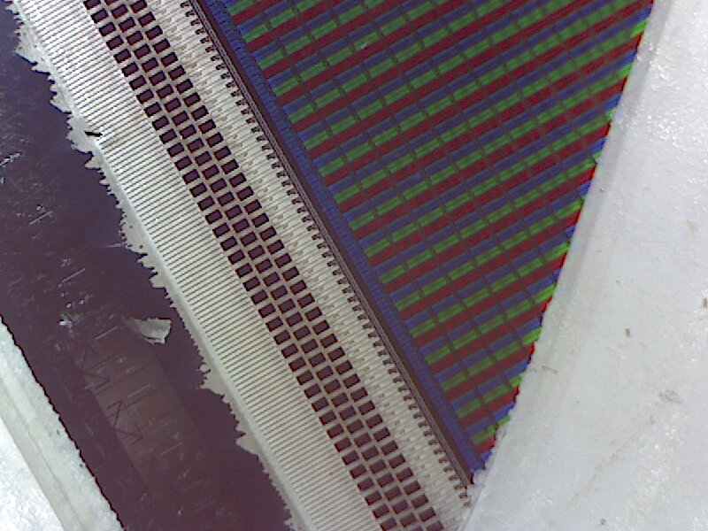

Creating a Forensics Report
For a damaged and ultimately defect Hitachi TV, the journey ended on our 'dissecting table' when we disassembled the device in order to create a forensics report. This report stated the methodology, the individual components found and finally the damage suspected to be linked to the TVs demise. Below, some impressions of the process can be found as well as the link to the report itself.

Our proud group presenting the (at the time) still assembled TV.

 
Disassembling the TV (from top left to bottom right: Lifting the LCD screen off the backlight panel, an overview of the components found (with the power supply board on the far right), a close-up of a missing HDMI port, a microscopic view of the LCD panel showing the RGB diodes forming each pixel.
A flat lay of the individual components found.
Data Gathering Exercise
We decided which categories to research, deciding on finding out if the ingredients within IAAC’s specific vending machine were local. We started small, then built up until we reached a global scale of interconnected supply chains. The detailed methodology and results can be seen below.
Our question and hypothesis finding process.


From the top left: The object of desire (a sandwich form the local vending machine, Oscar teaching Python fundamentals, employing Python web scraping scripts and visualizing the location producers of readymade sandwiches across western Europe.